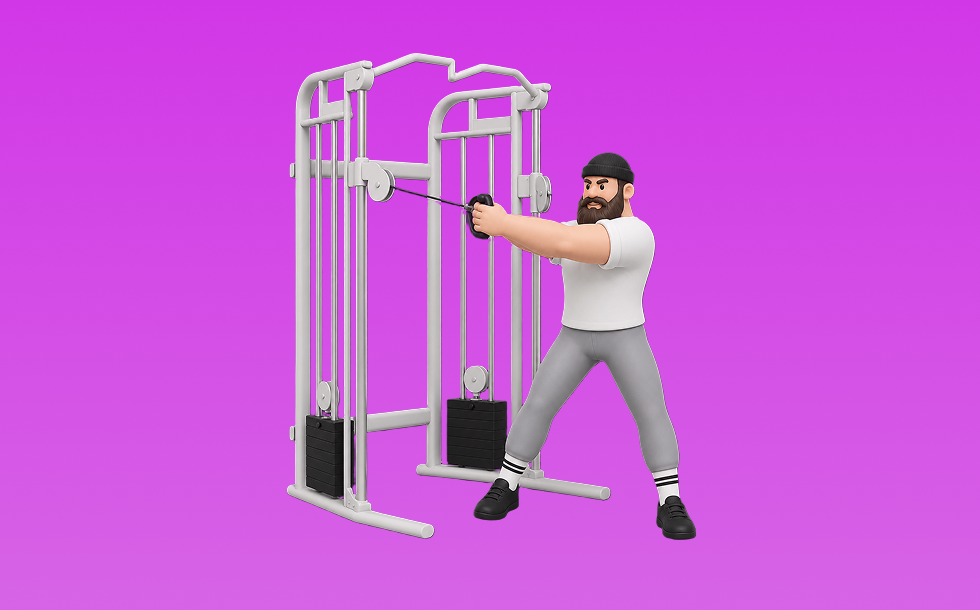

ケーブルウッドチョップ

ケーブルウッドチョップとは、ケーブルを使って「動かす」動作で腹斜筋、体幹を鍛える種目です。可動域全体で張力が抜けにくいのが特徴で、体幹を安定させたまま、ひねる／押し出す動作をコントロールして行います。お腹の引き締めと体幹固定力の向上が期待できます。
- 対象部位
- 体幹
- 器具
- ケーブル
- 記録形式
- 回数
- 別名
- ウッドチョップ
YouTube動画
-
ウッドチョッパー
-
How to perform a Cable Wood Chop
-
ケーブルサイドベンドの正しいフォーム◎腹筋横の『腹斜筋』をケーブルで鍛える！
-
【ケーブルマシン】腹直筋 効いてそうで効かないやり方の人多すぎ!!
-
【ケーブルマシン】女性が知りたいお尻・二の腕・背中 使い方4選！
-
【アスリート向けトレーニング種目】#バープレス #トランクツイスト #ケーブルウッドチョップ #筋トレ #解説動画 #パーソナルトレーナーの勉強部屋
-
くびれ作りにはケーブルマシンがオススメ！
-
【ウッドチョップ】体幹 横腹を鍛える トレーニング方法 フィットアワー マルチエクサボード 筋トレ エクササイズ トレーニング
-
ケーブルツイストの解説（腹筋トレーニング）
-
木こりの動きで最強の体づくり[WOOD CHOP]
-
エニタイムフィットネスにあるケーブルマシンの使い方！高さ別のおすすめ種目についても紹介【マシンのセッティング&種目解説】
-
【ゴルフトレ】飛距離アップトレーニング！ケーブル編
-
【177】《72歳の筋トレ》自作マシンでケーブルウッドチョップ
-
実は筋トレ効率悪いケーブル種目！みんなやってる意味ない3選！
-
【筋トレ】ケーブルマシン完全解説!?肩/背中/腕/胸を鍛える最強おすすめ種目10選!?
-
【筋トレ】腹筋！オススメのメニュー3種目！
YouTubeショート
-
PHYSIX Cable training：ケーブルウッドチョッパー
-
【インパクトで当たり負けしない‼️】スイングの動きで筋トレをして、全身を強化しましょう‼️🔥【体育教師✖︎レッスンプロ】#short #shorts #golf #高尔夫 #ゴルフ
-
Wood Chop on Cable
-
【腹筋トレ解説】ケーブルクランチ #筋トレ解説 #腹筋トレ #腹筋トレーニング
-
最大ストレッチと収縮はケーブル一択
-
ケーブルプルオーバーのテクニック
-
メディシンボール・ウッドチョップ｜Medicine Ball Wood Chop｜下半身と上半身の連動性を高めるトレーニング
-
バンドウッドチョップ
-
持田選手にケーブルで行うサイドレイズについてレクチャーしていてもらいました！次はどの種目の解説をやってほしいかコメントしてね！#トレーニング #筋トレ #fitness #workout
-
マッチョがゴルフしてみたら。。。🏌️♂️⛳️ #筋トレ #マッチョ #ゴルフ #ドライバー #筋肉 #筋肉社長
-
【ガチで効く】”腹斜筋”を鍛える宅トレメニュー４選🔥 #shorts #腹筋 #シックスパック
-
ケーブルローテショナルチョップ！
-
ケーブルマシンで背中を鍛える❣️
-
【成長記録】おすすめの腹筋トレーニング 〜ケーブルトランクツイストの１ヶ月の変化〜#shorts
-
【美ボディ】くびれGET！ウッドチョップトレーニング #shorts #workout #筋トレ
-
家トレを始めた人を見たジム常連の反応 #shorts
-
【ジムにこういう奴おらん？】使用中のケーブルマシンの片側を無言で使う奴
-
ゴルフスイングに繋がるトレーニング🏌️♀️🔥 #笹原優美 #白水直樹 #ゴルフ #ゴルフスイング
-
【IFBB PRO 上里選手】筋トレ初心者必見!!背中種目で注意すべきこと
-
【平良海馬】どんな筋トレすれば球速上がる？【2023/10/28】
-
【シャイニー選手】ケーブルカールのポイント
-
インスタで1000万回再生された伝説の動画 #tennis
-
ウッドチョップ
-
筋トレでこれ使うと世界が変わります #shorts
-
くびれたお腹を作る「ケーブルウッドチョップ」
-
ダンベル・ウッドチョッパー
-
マッチョってダンベル何キロまで持てる？#shorts #筋トレ #ダンベル何キロ持てる
-
ケーブルトレーニング 広背筋 柴田雄一郎トレーナー 指導風景 広島 パーソナルトレーニングジム ナンバーワン #ジム #ダイエット #パーソナルジム#広島 #ジム #ダイエット #パーソナルジム
-
ウエストに効く！トレーニング6選
-
正しいケーブルプレスダウン4つのポイント #筋トレ
動作方法
- 体幹を固定して姿勢を整える
- 反動を使わず、腹部の収縮を感じる
- 呼吸を止めずに動作する
動作ポイント
- 腰を反らしすぎない
- 首に力を入れすぎない
ワンポイントアドバイス
- 回数よりも体幹の安定を優先する
- 腰に違和感がある場合は可動域を調整する
目的別回数設定
目的や体力に応じた一般的な目安です。無理のない範囲で調整してください。
- 筋力アップ
- 1〜5回
- 筋肥大
- 6〜12回
- 持久力アップ
- 13〜20回
YouTube動画について
動画はYouTubeの公開情報をもとに表示しています。内容は投稿者によるもので、Biggrによる監修ではありません。
アプリを入手
筋トレやトレーニングの記録はBiggrにお任せください。今すぐ無料で使い始められます。